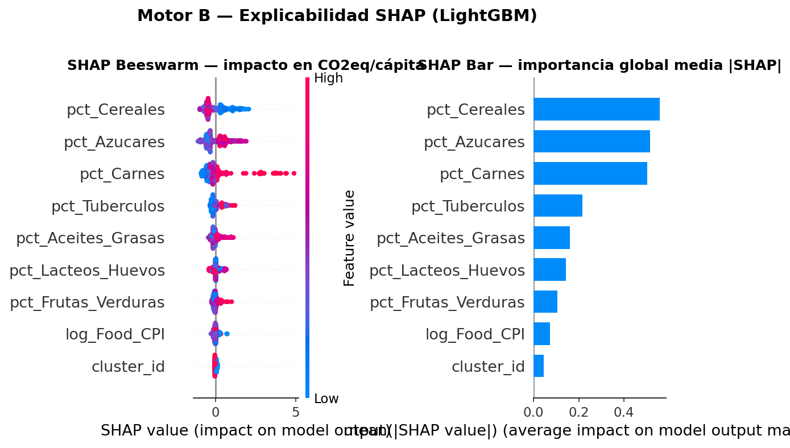

Descubrimos las tipologías dietarias no evidentes de 30 países y cuantificamos su impacto en CO₂, triangulando tres dimensiones: nutrición, coste y clima.
Cada motor ataca una dimensión distinta y sus salidas se triangulan en un único dashboard interactivo.
Los 3 drivers principales del CO₂ descubiertos por SHAP — Cereales, Azúcares y Carnes — coinciden con el orden de impacto climático reportado por Poore & Nemecek (2018, Science) para sistemas agroalimentarios.
Sin anclar el modelo a conocimiento previo, LightGBM aprende que la composición
dietaria contiene por sí sola la señal completa: el cluster_id aporta
solo 0.04 |SHAP| cuando ya están las 7 macrocategorías en el vector de entrada.
Esto valida el pipeline como método replicable: si dieras a otro equipo el mismo dataset sin contarles nada de emisiones, llegarían a las mismas conclusiones.

Validadas por Silhouette = 0.40 y estabilidad temporal del 98.7% en 13 años.
Cada nodo es una pieza del pipeline; las líneas son el flujo de datos. Pasa el ratón por encima para ver detalle. Eje horizontal = avance temporal del pipeline · eje vertical = naturaleza técnica.
Cinco vistas Streamlit con datos en vivo desde los parquets procesados y el modelo
lgb_final.pkl cargado en memoria.